Part 1 of 5 — a digital twin of a winter-wheat field outside Linköping, built from a satellite, a weather service, a system model and a databin.
← systemsnotcode.comCustomers ask me this often. Over five parts I will answer it with five different examples. This first part is a digital twin of a winter-wheat field outside Linköping.
A digital twin, as I understand it, is a digital model of a physical system, synced using sensor data. So in this workflow we will see how to fetch data, use a system model for prediction and finally use the data to sync the model to the field.
Winter wheat is sown in September and harvested the next August. This twin's job is to tell the farmer, every day, when the crop will flower, when it will be ready to harvest and how much it will yield, and to raise a flag when the field strays from its expected course.
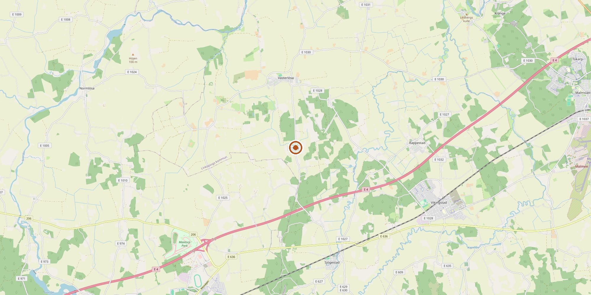
A satellite like Sentinel-2 watches the field from space. It passes over the field every two to three days and sees 10 m per pixel; the data is free. Here is what it saw on 4 July 2026, rendered as a photo.
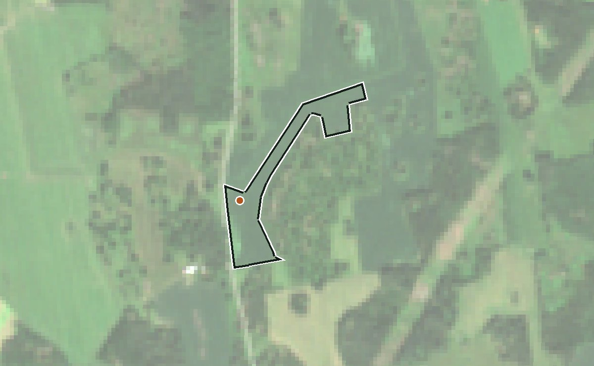
The satellite does not only take photos. On every pass it records thirteen colour bands, each a slice of the spectrum, some beyond what the eye can see. We need two of them. From those two we compute a map of the same area, one number per pixel, which I will call the greenness plot.
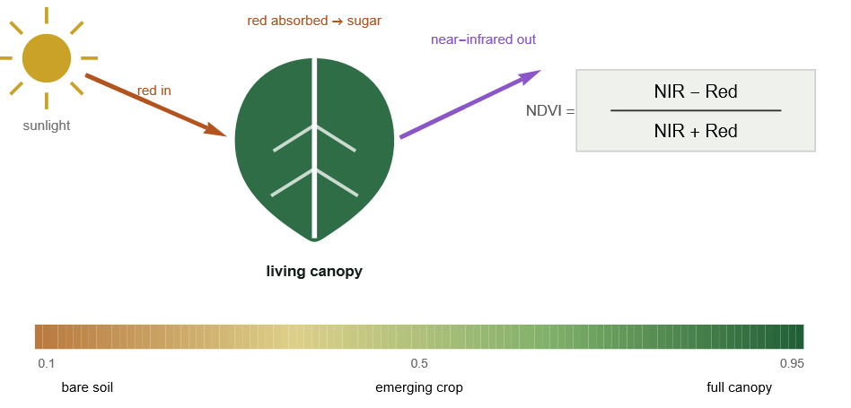
The expression is the NDVI, the normalised difference vegetation index. A living leaf swallows red light for photosynthesis and throws back near-infrared from its cell structure; bare soil reflects both about equally. The contrast is the NDVI: near 0.2 for bare soil, above 0.9 for a field fully covered by leaf.
Reflectance is the share of sunlight the ground sends back in each band. On 22 September 2025, just after sowing: red 0.061, near-infrared 0.103. NDVI = (0.103 − 0.061) / (0.103 + 0.061) = 0.26, bare soil. At the same point on 30 May 2026: red 0.020, near-infrared 0.469. NDVI = (0.469 − 0.020) / (0.469 + 0.020) = 0.92, a closed canopy. The leaf swallowed nearly all the red and threw back the infrared. This number, one per clear pass, is what the model is compared against.
Seven passes over the same field:
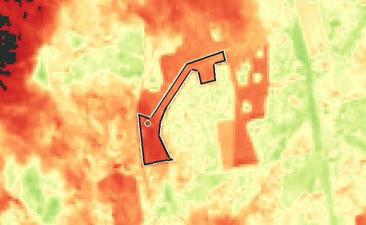
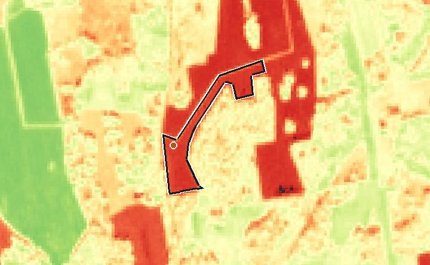
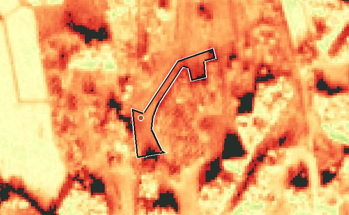
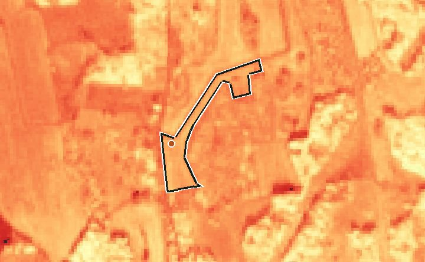
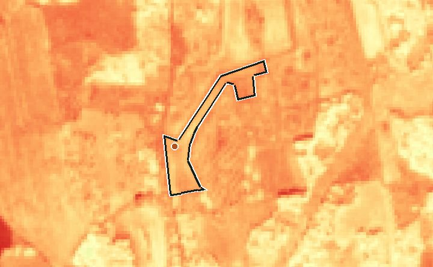
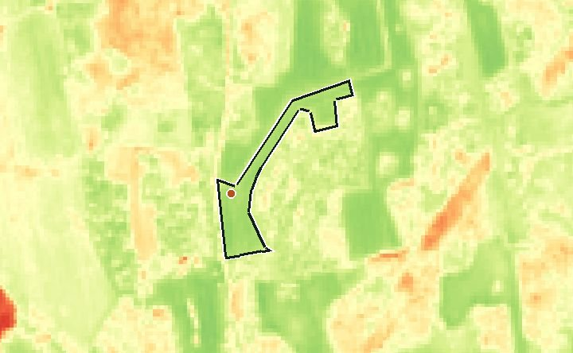
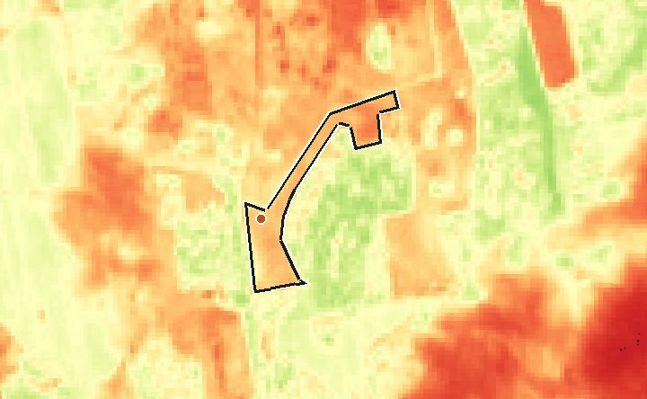
| Phase | Date | Red | Near-infrared | (NIR − Red) / (NIR + Red) | NDVI |
|---|---|---|---|---|---|
| Stubble after harvest | 2025-09-22 | 0.061 | 0.103 | (0.103 − 0.061) / (0.103 + 0.061) | 0.26 |
| Sown, nothing up yet | 2025-10-02 | 0.088 | 0.140 | (0.140 − 0.088) / (0.140 + 0.088) | 0.23 |
| Small plants, autumn | 2025-11-24 | 0.167 | 0.289 | (0.289 − 0.167) / (0.289 + 0.167) | 0.27 |
| First image after winter | 2026-03-06 | 0.063 | 0.182 | (0.182 − 0.063) / (0.182 + 0.063) | 0.49 |
| Spring growth | 2026-04-09 | 0.092 | 0.236 | (0.236 − 0.092) / (0.236 + 0.092) | 0.44 |
| Peak canopy | 2026-05-30 | 0.020 | 0.469 | (0.469 − 0.020) / (0.469 + 0.020) | 0.92 |
| Ripening and harvest | 2026-08-11 | 0.149 | 0.402 | (0.402 − 0.149) / (0.402 + 0.149) | 0.46 |
The part a plant can use is called PAR. Roughly 3 g of dry matter is created per MJ of energy intercepted.
A crop counts warmth. Each day adds its mean temperature above 0 °C to a running total: a day at 10 °C adds 10, a day at −3 °C adds 0. That total is thermal time, in degree-days (°C·d). Every stage arrives at a set amount of it: this wheat flowers at about 1800 °C·d. A warm spring reaches it in May, a cold one in June.
The root zone holds water like a bucket. Rain fills it; the crop consumes it and the soil breathes it out (together, evapotranspiration); anything above what the soil can hold drains away. Growth slows when the level falls low.
Stages follow the thermal clock, not the calendar: emergence, tillering, a near-standstill over winter, the fast spring growth, flowering at about 1800 °C·d, then grain fill and harvest.
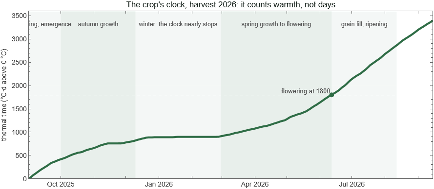
Weather comes from SMHI, Sweden's meteorological institute, whose station 85240 at Malmslätt is 13 km from the field.
field = {15.35, 58.40}; (* longitude, latitude of the field *)
station = 85240;
url = StringTemplate["https://opendata-download-metobs.smhi.se/api/version/1.0/parameter/`p`/station/`s`/period/latest-months/data.csv"];
(* SMHI daily rows: from; to; representative day; value; quality *)
dailyRow = {_, _, day_ /; StringLength[day] == 10, value_, ___} :> DateObject[day] -> ToExpression[value];
smhi[p_] := Module[{csv, rows},
csv = URLExecute[url[<|"p" -> p, "s" -> station|>], "Text"];
rows = StringSplit[#, ";"] & /@ StringSplit[csv, "\n"];
Association @ Cases[rows, dailyRow]]
(* SMHI parameter codes *)
dailyMax = 20; dailyMin = 19; dailyRain = 5;
temperature = Merge[{smhi[dailyMax], smhi[dailyMin]}, Mean]; (* daily mean = (max + min)/2 *)
rain = smhi[dailyRain];
(* the last five days *)
Dataset @ Table[<|"date" -> d, "mean temperature (°C)" -> temperature[d], "rain (mm)" -> Lookup[rain, d, 0.]|>,
{d, Take[Keys @ KeySort @ temperature, -5]}]
(* Sun 20 Sep 2026 14.0 0.5
Mon 21 Sep 2026 12.7 0.0
Tue 22 Sep 2026 9.25 0.0
Wed 23 Sep 2026 11.15 0.0
Thu 24 Sep 2026 14.4 0.0 *)
Sunlight comes from STRÅNG, SMHI's radiation model, at the field's coordinates; parameter 120 is the part plants can use, PAR, in MJ/m² per day.
strangUrl = StringTemplate["https://opendata-download-metanalys.smhi.se/api/category/strang1g/version/1/geotype/point/lon/`lon`/lat/`lat`/parameter/`p`/data.json?from=`from`&to=`to`&interval=daily"];
strang[p_] := Association @ Map[DateObject[StringTake[#["date_time"], 10]] -> #["value"] &,
URLExecute[strangUrl[<|"lon" -> field[[1]], "lat" -> field[[2]], "p" -> p, "from" -> "2026-09-01", "to" -> DateString[Today, "ISODate"]|>], "RawJSON"]];
par = Select[strang[120], # > -900 &] * 0.0036; (* Wh/m2 -> MJ/m2; a missing day is -999 and is dropped *)
Dataset @ Take[KeySort[par], -5]
A scene is one satellite image of one pass, about 100 km across; we search for every scene that contains the field.
stac = "https://planetarycomputer.microsoft.com/api/stac/v1/search";
point = "https://planetarycomputer.microsoft.com/api/data/v1/item/point/15.35,58.40";
scenes = URLExecute[HTTPRequest[stac, <|Method -> "POST", "ContentType" -> "application/json",
"Body" -> ExportString[<|"collections" -> {"sentinel-2-l2a"},
"intersects" -> <|"type" -> "Point", "coordinates" -> field|>,
"datetime" -> "2026-09-01T00:00:00Z/2026-09-24T00:00:00Z"|>, "JSON"]|>], "RawJSON"]["features"];
Take the newest scene and ask for the two bands from the NDVI formula and the scene class at the field:
scene = First[scenes];
scene["properties"]["datetime"]
URLExecute[point, {"collection" -> "sentinel-2-l2a", "item" -> scene["id"],
"assets" -> "B04", "assets" -> "B08", "assets" -> "SCL"}, "RawJSON"]["values"]
(* "2026-09-22T10:27:01.024000Z"
{1391., 4333., 4.} *)
Three numbers: red, near-infrared, scene class. The first two are not the reflectances like 0.061 and 0.103 we used above. The archive stores each band as an integer, the reflectance times 10 000, and since 2022 (processing baseline 04.00) with 1000 added on top. So:
{red, nir} = ({1391, 4333} - 1000)/10000. (* {0.0391, 0.3333} *)
(nir - red)/(nir + red) (* 0.790011 *)
The third number, 4, is the scene class at the location: 4 means vegetation, 5 bare soil, and the others are cloud, cloud shadow, snow or water. Reflectance is only "what the ground sends back" if the satellite saw the ground, so a pass is kept only when the class is 4 or 5. That is the cloud mask.
offset[scene_] := If[ToExpression[scene["properties"]["s2:processing_baseline"]] >= 4, 1000, 0];
ndviOf[scene_] := Module[{red, nir, class},
{red, nir, class} = URLExecute[point, {"collection" -> "sentinel-2-l2a", "item" -> scene["id"],
"assets" -> "B04", "assets" -> "B08", "assets" -> "SCL"}, "RawJSON"]["values"];
{red, nir} -= offset[scene];
<|"date" -> StringTake[scene["properties"]["datetime"], 10],
"ndvi" -> N[(nir - red)/(nir + red)],
"clear" -> MemberQ[{4, 5}, Round[class]]|>]
observations = SortBy[Select[ndviOf /@ scenes, #["clear"] &], #["date"] &];
Dataset[observations]
(* 2026-09-06 0.413 2026-09-09 0.425 2026-09-09 0.481 2026-09-17 0.702
2026-09-20 0.781 2026-09-22 0.783 2026-09-22 0.790 *)
9 and 22 September appear twice: the field lies where two tiles overlap, so one pass yields two scenes. The daily run averages them.
v > 0 guard deletes every frost day). Subtract 1000 from every band on scenes processed since 2022. At 58°N, distrust any pass with the sun below 25° — low sun reads green that is not there.Here is the crop year as a flow diagram, the process the model has to reproduce:
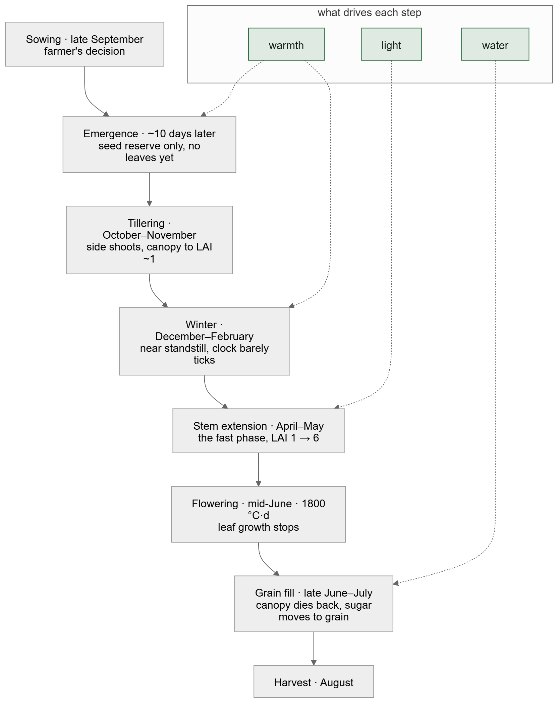
The crop growth can be modelled using the concept of system dynamics, where a stock is something that accumulates and a flow is a rate that fills or drains it. Soil water, green leaf, dry matter and thermal time are the stocks.
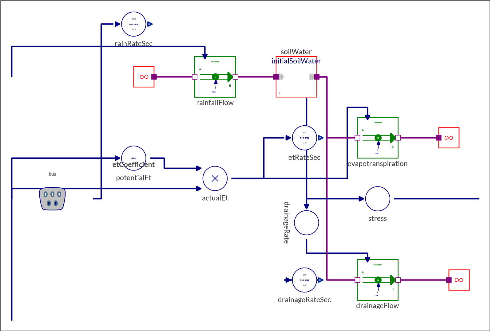
Leaf works the same way. Light the canopy catches becomes sugar; a share of that becomes new leaf, which catches more light: until the canopy intercepts nearly all of it and the loop starves. After flowering the same stock drains as the canopy yellows.
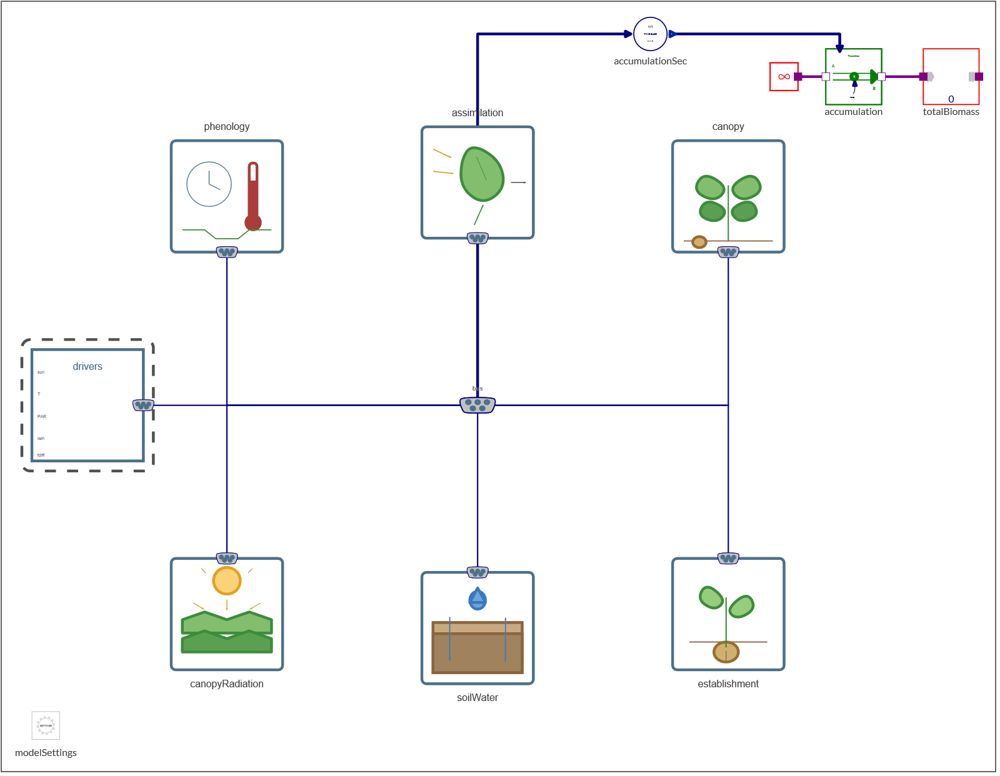
Here is a simulation of the model for a year:
CloudImport["https://www.wolframcloud.com/obj/fbc523e9-2893-47eb-b3d1-3814132a9650", "SMA"]; (* the CropTwin library *)
sim = SystemModelSimulate["CropTwin.Seasons.Harvest2019"];
SystemModelPlot[sim]
Five completed seasons, the model driven by weather alone, the satellite as the data source:
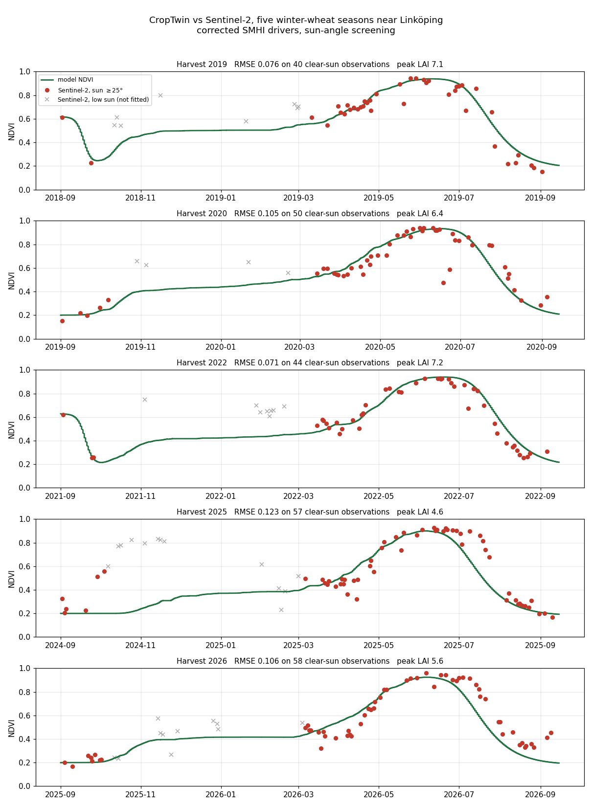
So far the satellite data has only been laid over the model. A twin needs the data to change the model, because no model represents every factor at work in the field; it has to be corrected toward what is actually there.
After every clear pass, the twin pulls its leaf area toward what the satellite implies, over two days. (It is one extra flow into the leaf stock: nudging, the simplest form of data assimilation.) A corrected state restarts the forecast from the field as it is.
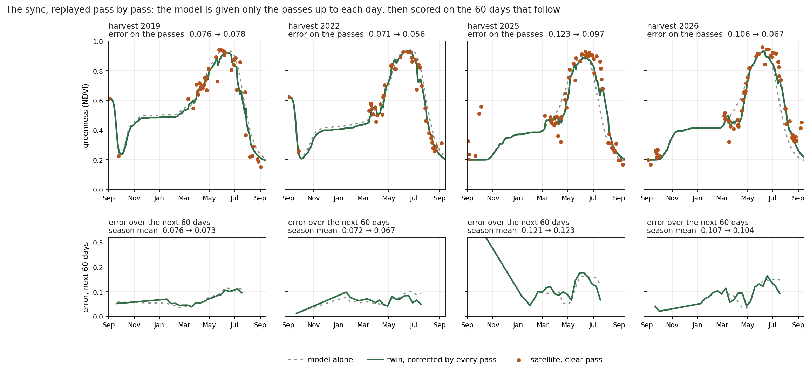
Be honest about what that buys. Two months ahead the gain is small: 0.076 → 0.073, 0.072 → 0.067, 0.121 → 0.123 and 0.107 → 0.104. Nudging corrects the leaf area, not the crop's clock, so the flowering and harvest dates the decisions run on barely move, and a single low pass can pull the line down for a few days, as in early July 2022. Correcting the clock as well, and weighting each pass by its noise, is the next step. Part 5 of this series is about exactly that: the twin that corrects itself.
Once we have the twin, it can be used to support decisions, every day:
Each day's line goes to the Databin and to a sync log, so the loop can be audited.
And the twin is earning its keep already. Since 22 September 2026 the field has read 0.79 before the crop has emerged, 9.8 standard deviations from what the twin expected. It leaves the seedling stand uncorrected, by design, and raises the alert instead: most likely stubble or volunteers regrowing, to be worked in before sowing. If the greenness never drops, the winter-wheat assumption is what to question, not the model.
The simulation needs System Modeler, so it runs on one computer once a day. The result goes to a Wolfram Databin, so the dashboard can read it from any browser. The daily script writes the full entry; here is its shape, from the live season with the sync on, into a scratch bin:
bin = CreateDatabin[];
seasonStart = DateObject[{2026, 9, 1}];
today = QuantityMagnitude[DateDifference[seasonStart, Today, "Day"]];
(* the clear passes as the table the model reads: day, ndvi, valid, day of pass *)
passes = <|"day" -> QuantityMagnitude[DateDifference[seasonStart, DateObject[#["date"]], "Day"]], "ndvi" -> #["ndvi"]|> & /@ observations;
obsFile = Export[FileNameJoin[{$TemporaryDirectory, "obs_2027.txt"}],
StringJoin["#1\ndouble obs(", ToString[Length[passes] + 1], ",4)\n-1 0 0 -1000\n",
StringRiffle[StringRiffle[ToString /@ {#day, #ndvi, 1, #day}, " "] & /@ passes, "\n"], "\n"], "Text"];
(* the twin: the live season, corrected by every clear pass so far *)
twin = SystemModelSimulate["CropTwin.Seasons.Live2027", {"bus.ndvi"}, 379*86400,
<|"ParameterValues" -> {"assimilationGain" -> 1, "observationFile" -> obsFile}|>];
entry = <|"date" -> DateString[Today, "ISODate"], "day" -> today,
"modelNdvi" -> twin["bus.ndvi"][today*86400.], "satellite" -> Last[observations]["ndvi"],
"forecast" -> Table[twin["bus.ndvi"][d*86400.], {d, 0, 379, 4}]|>;
DatabinAdd[bin, <|"kind" -> "today", "date" -> entry["date"], "json" -> ExportString[entry, "JSON"]|>]
(* read it back, in Wolfram Language or from a browser *)
ImportString[Last[Normal[bin]]["json"], "RawJSON"];
URLExecute["https://datadrop.wolframcloud.com/api/v1.0/Recent?bin=" <> bin["ShortID"], "Text"]
Decide what matters here: the field itself, what the satellite sees against what the twin expects, what the satellite changed today, the decisions, the warmth accumulated, and the yield the twin foresees. Then let an LLM write the HTML. The page reads the databin when it opens and can be hosted anywhere.
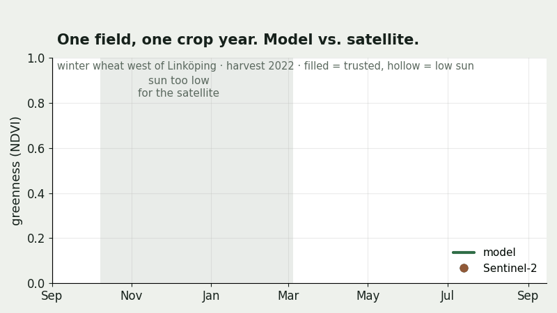
The live twin: replay last season over the field with both lines, pause to read, see today's disagreement explained by the model, and watch the expected dates and yield move from one day's issue to the next.
Open the live twin →| Layer | Technology | Job |
|---|---|---|
| Data | Wolfram Language | URLExecute to SMHI, STRÅNG, the Planetary Computer and Jordbruksverket — one Association per source |
| Model | Wolfram System Modeler | the crop as stocks and flows; SystemModelSimulate predicts from the weather |
| Memory | Wolfram Databin | one entry per day, readable by anyone with the ID |
| Face | HTML + JavaScript | reads the bin in the browser, draws the field and the charts |